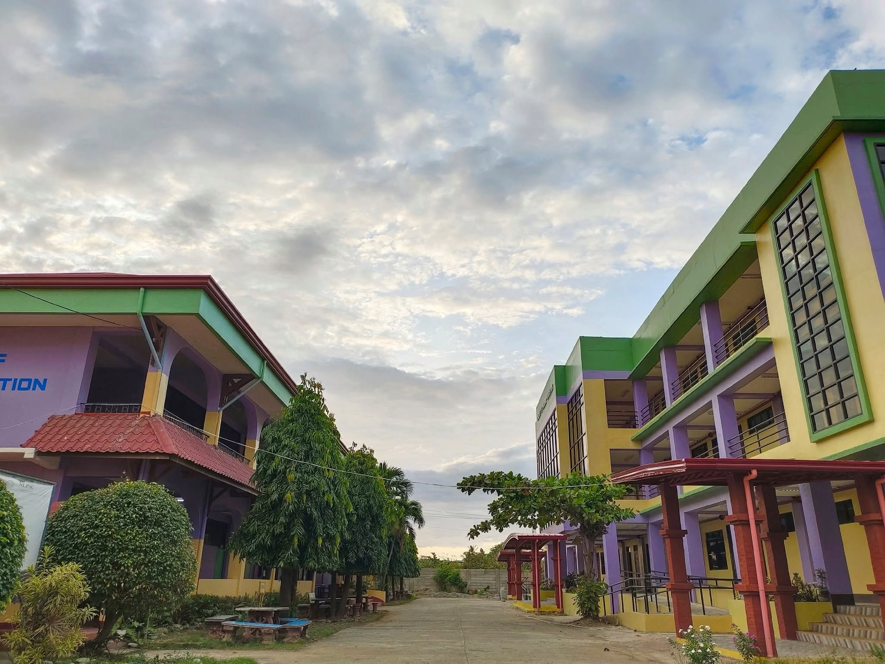

Our beginnings
The Main Campus traces its roots to Candon Community College, established in 1975. Its development reflects the continuing pursuit of accessible higher education in the area.
IL0COS SUR POLYTECHNIC STATE COLLEGE
Explore opportunities, develop your skills, and take the next step toward your academic goals at ISPSC Main Campus.

GET TO KNOW US
Ilocos Sur Polytechnic State College is a public higher education institution serving communities in Ilocos Sur. This student-developed website introduces the Main Campus and highlights its academic opportunities and campus community.
The Main Campus is located in Barangay San Nicolas, Candon City, Ilocos Sur. Its history traces its roots to Candon Community College, established in 1975.
Explore our story →OUR INSTITUTIONAL IDENTITY
A learning community shaped by its history and committed to education, knowledge, and service.
The Main Campus traces its roots to Candon Community College, established in 1975. Its development reflects the continuing pursuit of accessible higher education in the area.
To produce globally competent and virtuous human resources, generate advanced knowledge, and develop innovative technologies for sustainable development.
UIP 2030: A smart, globally competitive, and responsive state university.
Institutional wording shown for reference; confirm the current official branding with the College.FIND YOUR PATH
Browse the undergraduate programs listed for the ISPSC Main Campus.
Program listings are based on the Main Campus information available from ISPSC. Applicants should confirm current availability and admission details with the Registrar.
BEYOND THE CLASSROOM
Discover the spaces and experiences that make a learning community.
MILESTONES & RECOGNITION
A selection of institutional and academic highlights.
Six Main Campus programs were announced as having earned Level II reaccredited status effective July 1, 2026 to June 30, 2027. The announcement also noted that they passed Phase 1 of the Level III accreditation process.
Supporting teaching and learning.
Encouraging inquiry and knowledge generation.
Connecting knowledge with community needs.
WHAT'S HAPPENING
2026
Read the official announcement about the Main Campus programs awarded Level II reaccredited status.
Visit official website ↗ISPSC
For current announcements, schedules, and official notices, consult the institution's official communication channels.
Find official updates ↗TAKE THE NEXT STEP
Interested in studying at ISPSC Main Campus? Send a general inquiry or contact the Registrar for official admission requirements and schedules.
CONNECT WITH US
For accurate and updated information, contact the College through its official channels.
Brgy. San Nicolas, Candon City, Ilocos Sur, Philippines